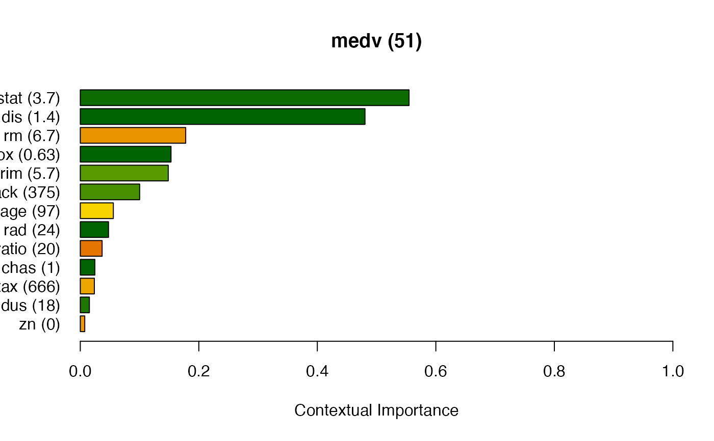

ciu.blackbox.new.RdThis method mainly serves as an "interface specification" for objects of
class CIU.BlackBox, i.e. it defines what method(s) have to be implemented
by any object of class CIU.BlackBox. A CIU.BlackBox object
is actually a list.
ciu.blackbox.new()Object of class CIU.BlackBox.
An alternative and simpler (but less flexible) way to do the same is to
use the predict.function parameter of ciu.new, where
predict.function <- function(model, inputs) {predict(model,inputs,n.trees=10000)}
would accomplish the same as for the Example below. An example using this
approach is also included in Examples.
The advantage of using a CIU.BlackBox wrapper
(rather than the simplee predict.function approach) is that it is
possible to keep object variables or maintain whatever state
information might be needed between calls.
The only things that are actually required from a
CIU.BlackBox object is:
That it is a list with an element called eval.
That the value of eval element is a function of the form eval = function(inputs)
That it inherits the class CIU.BlackBox.
# Create CIU.BlackBox wrapper for Gradient Boosting
library(MASS) # Just in case Boston is not already available
library(gbm)
#> Loaded gbm 2.1.8.1
gbm.ciu.bb <- function(gbm, n.trees=1) {
o.gbm <- gbm
o.n.trees <- n.trees
pub <- list(eval = function(inputs) { predict(o.gbm,inputs,n.trees=o.n.trees) })
class(pub) <- c("CIU.BlackBox",class(pub))
return(pub)
}
# \donttest{
# Train and explain. We don't care about training/test sets here.
gbm.Boston <- gbm(medv ~ . ,data = Boston, distribution = "gaussian",
n.trees=10000, shrinkage = 0.01, interaction.depth = 4)
gbm.ciu <- gbm.ciu.bb(gbm.Boston, 10000)
ciu <- ciu.new(gbm.ciu, medv~., Boston)
ciu$barplot.ciu(Boston[370,1:13], sort = "CI")

# Same but using `predict.function` parameter in `ciu.new`.
# Using `ggplot.col.ciu` here for a change.
predict.function <- function(model, inputs) {predict(model,inputs,n.trees=10000)}
ciu <- ciu.new(gbm.Boston, medv~., Boston, predict.function=predict.function)
ciu$ggplot.col.ciu(Boston[370,1:13], sort = "CI")
# }